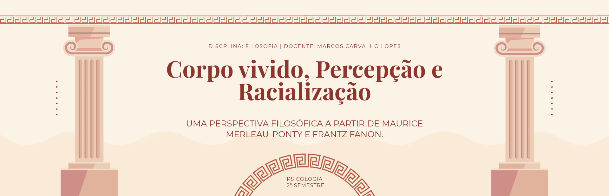
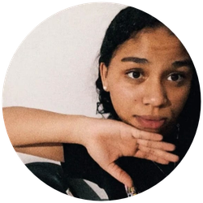

João Lucas
Karoline

Maria Eduarda
Natália
Na fenomenologia de Merleau-Ponty, o corpo não deve ser compreendido apenas como uma estrutura biológica, formada por órgãos, músculos e ossos. Para o filósofo, o corpo possui um significado muito mais amplo, pois é por meio dele que vivenciamos o mundo, percebemos o que está ao nosso redor e estabelecemos relações com outras pessoas. Dessa forma, o corpo não é apenas algo que possuímos, mas parte fundamental da nossa própria existência.
Essa compreensão nos leva a perceber que não estamos simplesmente no mundo por meio da nossa mente, mas também por meio das experiências corporais. Quando caminhamos, sentimos o vento, ouvimos uma música ou tocamos algum objeto, estamos vivenciando o mundo através do corpo. Essas experiências mostram que ele não é apenas um instrumento utilizado pela consciência, mas participa diretamente da maneira como compreendemos e nos relacionamos com a realidade.
Outro aspecto importante é a percepção. Para Merleau-Ponty, perceber não significa apenas receber informações pelos sentidos, pois o corpo participa ativamente desse processo. Nossa maneira de enxergar, sentir e compreender as coisas está relacionada às experiências que vivemos. Por exemplo, ao observar uma paisagem, não estamos apenas recebendo uma imagem, mas vivenciando aquele momento a partir da nossa própria experiência corporal.
Além disso, o corpo também expressa aquilo que sentimos e vivenciamos. Nossos gestos, expressões faciais e movimentos podem demonstrar sentimentos e intenções, mesmo quando não utilizamos palavras. Isso mostra que o corpo também é uma forma de comunicação e está diretamente relacionado à maneira como nos expressamos e nos relacionamos com outras pessoas.
Portanto, o conceito de corpo vivido em Merleau-Ponty nos permite compreender que o corpo não pode ser separado da experiência humana. Ele é a condição pela qual percebemos, sentimos e nos relacionamos com o mundo. Assim, compreender o corpo vivido é reconhecer que nossa existência acontece por meio das experiências corporais e que é através delas que construímos nossa relação com a realidade.
Em Pele Negra, Máscaras Brancas (1952), no capítulo "A experiência vivida do negro", Frantz Fanon desmonta a ideia de que habitar o corpo é algo neutro. Para o sujeito negro numa sociedade colonial e racista, a cor da pele atravessa cada gesto e percepção.
Enquanto Merleau-Ponty fala do esquema corporal — aquele movimento automático e espontâneo no mundo, sem ficar pensando no próprio corpo —, Fanon mostra que esse automatismo quebra diante do olhar branco. Entra em cena o esquema histórico-racial (e o esquema epidérmico racial): o corpo negro vira alvo de atenção constante, é reduzido à pele e passa a carregar estereótipos coloniais e o peso de responder por todo um grupo — como na cena em que uma criança aponta para ele e diz "Olhe, um preto!".
Com a epidermização da inferioridade, o valor humano parece colado à cor da pele. A pessoa negra passa a ser tratada quase como objeto entre objetos e empurrada para a "zona do não-ser", um espaço de tensão e falta de reconhecimento pleno de humanidade.
Por dentro, isso racha a espontaneidade. Para tentar escapar do estigma — buscando uma espécie de "máscara branca" —, surge um auto-monitoramento constante: olhar-se de fora na terceira pessoa, travar em gestos simples com medo de confirmar clichês e, muitas vezes, sentir rejeição pelo próprio corpo diante do padrão branco.
Fanon dialoga com a fenomenologia ao partir da experiência vivida em primeira pessoa e do corpo como modo de estar no mundo. Ele descreve o esquema corporal como um conhecimento implícito do corpo, como quando alcança o cigarro sem pensar, numa "dialética efetiva entre meu corpo e o mundo". Essa descrição lembra o corpo vivido de Merleau-Ponty, que também entende o corpo como a nossa maneira de ter mundo antes de qualquer reflexão.
A expansão acontece quando esse corpo é atravessado pelo olhar racista. Ao ouvir "Olhe, um preto!", Fanon se descobre "objeto em meio a outros objetos", e o esquema corporal "desmoronou", cedendo lugar a um "esquema histórico-racial" e a um "esquema epidérmico racial". Esses elementos não vêm das sensações do próprio sujeito, mas do outro, por meio de histórias e lendas. Assim, o corpo vivido deixa de ser neutro e universal, porque a raça e a história colonial o constituem.
Fanon também reformula Sartre. Ele aceita a ideia do olhar do outro, mas diz que, no caso do negro, o outro é também o senhor, e por isso o negro sofre em seu corpo de outro modo. Ele critica ainda a ontologia, que deixa de lado a existência e não explica o ser do negro. Por fim, a "sociogenia" acrescenta um plano social à explicação da alienação.
A articulação entre percepção, corpo e raça traz contribuições importantes para a teoria e a prática psicológica atual, principalmente porque nos faz repensar a maneira como a subjetividade humana é construída. A partir de Merleau-Ponty, compreendemos que o corpo não é apenas algo que possuímos, mas a nossa forma de existir e nos relacionar com o mundo. Ou seja, nossas experiências, percepções e relações são construídas também por meio do corpo. Entretanto, Fanon amplia essa discussão ao mostrar que essa experiência corporal não acontece da mesma maneira para todos, pois também é atravessada por questões históricas, sociais e raciais.
Nesse sentido, Fanon nos ajuda a compreender como o racismo interfere na maneira como uma pessoa negra vivencia o próprio corpo e constrói sua identidade. O olhar do outro, os estereótipos e as situações de discriminação podem fazer com que essa pessoa passe a se perceber a partir de uma imagem que foi construída socialmente sobre ela. Isso demonstra que a subjetividade não se forma de maneira isolada, mas também é influenciada pelas relações que estabelecemos e pelas condições em que vivemos.
Essa compreensão traz uma consequência importante para a Psicologia: precisamos olhar para o sofrimento psíquico para além das questões individuais. Muitas vezes, determinados sofrimentos estão relacionados às experiências de exclusão, preconceito, desigualdade e falta de reconhecimento. Portanto, não podemos desconsiderar o contexto social e racial em que o sujeito está inserido ao tentar compreender suas experiências e dificuldades.
Na prática clínica, essa perspectiva exige uma escuta mais atenta e sensível às diferentes realidades. O psicólogo precisa reconhecer que cada pessoa possui uma história e experiências particulares, evitando interpretar todos os sofrimentos a partir de uma mesma referência. Isso também significa questionar os modelos tradicionais da Psicologia que, historicamente, trataram determinadas experiências culturais como universais, deixando de considerar outras formas de existência. Assim, a aproximação entre Merleau-Ponty e Fanon contribui para uma Psicologia mais crítica e decolonial, que não responsabilize exclusivamente o indivíduo pelo seu sofrimento, mas considere também seu corpo, sua história e as relações sociais que atravessam sua existência.
FANON, Frantz. Pele negra, máscaras brancas. Tradução de Renato da Silveira. Salvador: EDUFBA, 2008.
MERLEAU-PONTY, Maurice. Fenomenologia da percepção. Tradução de Carlos Alberto Ribeiro de Moura. 2. ed. São Paulo: Martins Fontes, 1999.